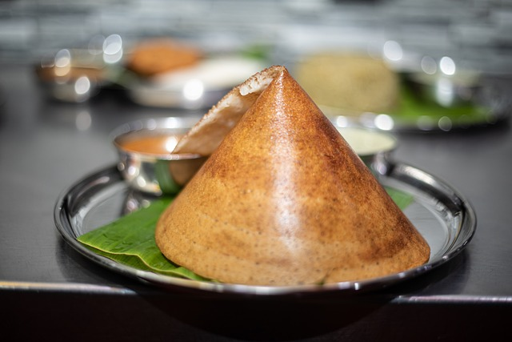

Dosa
What is Dosa
A dosa is a thin savory pancake in South Indian cuisine made from a fermented batter of ground black lentils and rice. Dosas are served hot, often with chutney and sambar. Dosa is a signature dish in South India and Sri Lanka, and is popularly served in their respective restaurants around the world.
Ingredient List For Dosa
- 1 Cup rice
- 1/4 Regular rice
- 1/2 Cup urad dal
- 1/2 Tsp fenugreek seeds
- 1/2 Tsp salt
How to make Dosas
Soak Rice and Lentils
1. In a bowl take ½ cup idli rice or parboiled rice along with ½ cup regular rice. Instead of adding regular rice, you can also make the dosa with a total of 1 cup idli rice as I have shown in the video.
2. To the same bowl, add ¼ cup urad dal and ⅛ teaspoon fenugreek seeds (methi).
3. Rinse the rice, lentils and methi seeds together a couple of times and keep them aside.
4. In a separate bowl, take 2 tablespoons of thick poha (flattened rice or parched rice).
5. Rinse poha once or twice in water and then add to the bowl containing the rinsed rice+lentils+methi seeds.
6. Add 1.5 cups of water and mix. Cover with a lid and soak everything for 4 to 5 hours.

Make Dosa Batter
7. Drain all the water and add the soaked ingredients to a mixer grinder or a blender.
8. Add ⅔ to ¾ cup water and grind or blend till you get a fine grainy consistency of rice in the batter. A
smooth consistency of the batter is also fine.
If the mixer gets heated up, then stop and wait for some minutes. When the mixer cools down, grind again.
Depending on the jar capacity, you can grind everything once or in two batches. I ground in two batches and
added a total of ¾ cup water.
9. Now take the batter in a large bowl or pan. In case the dosa batter becomes thin, then add a few tablespoons of rice flour to thicken it. Mix the rice flour very well in the batter.
10. Add ½ teaspoon of edible rock salt. Mix very well. Instead of rock salt, you can use non-iodized salt or sea salt crystals or Himalayan pink salt.
Ferment Dosa Batter
11. Cover and allow to ferment for 8 to 9 hours or more. The time of fermentation will vary depending on the
temperature conditions, climate and altitude.
In winters, the time of fermentation can go up to 14 to 24 hours. If you live in a cold city or high
altitude then I highly recommend fermenting the batter in an Instant pot if you have one.
I have listed below more fermentation tips and suggestions including fermenting dosa batter in an Instant
pot. So do read these handy and helpful tips.
In the below photo, you see the dosa batter after 11 hours of fermentation. A proper fermentation will
double or triple up the volume of the batter with a light sour aroma.
12. Now lightly stir the batter, before you begin to make dosa. You will also see many tiny air pockets in the batter. As you see in the below photo, the batter is very well fermented.
Make Dosa
1. Heat a cast iron pan. When the pan becomes hot, spread ¼ to ½ teaspoon oil all over the pan with a spoon or with a thick paper towel dipped in oil. For a richer taste, you can cook the dosa with ghee or butter.
Note that the oil should be spread evenly or else it becomes difficult to spread the batter. If the pan is well seasoned you don’t need to spread oil. I suggest keeping a separate skillet or tawa to make only dosa.
Do keep the heat on low to low-medium flame, so that you are easily able to spread the batter. If the pan base is very thick, then keep the flame to medium.
For a low-fat option, just make the dosa without any oil. But make sure that your pan is well seasoned. Otherwise the dosa will stick to the pan.
2. Now take a ladle full of the dosa batter or about ¼ cup of the batter. Pour the batter and gently spread the batter starting from the center and moving outwards. In the below photo you will see a well-spread dosa batter.
3. Cook the dosa on low to medium heat. Do regulate the heat as per the pan size and thickness. You can even cover the dosa with a lid and let it get cooked from the bottom as I do.
4. Cook till the base is nicely golden and crisp. The base will leave the pan and the edges separate when it gets cooked.
When you see the batter on the top cooked well and the base has become golden, then sprinkle ¼ to ½ teaspoon oil on the edges and center. With the spoon spread the oil on the dosa.
If you prefer, you can flip the dosa and cook the top side for a minute.
6. When the dosa has nicely browned from the bottom and the surface looks well cooked, soft without any specks of undercooked batter, then fold with a spatula and lift it from the pan.
Make the remaining batches of dosa this way. Keep the leftover batter in the refrigerator for 1 to 2 days or you can freeze it for a week.
7. Serve Dosa hot with coconut chutney, potato masala and sambar. It is best to serve these crispy dosa hot.
If you want to serve it with potato curry (potato masala), then do check my recipe of Masala Dosa. You can also check this recipe of Poori Masala which makes for a tasty potato curry.
If you have any batter remaining, then store in an air-tight container for 2 to 3 days in the fridge. You can also freeze the batter for a week. Before making dosa, thaw the batter at room temperature.